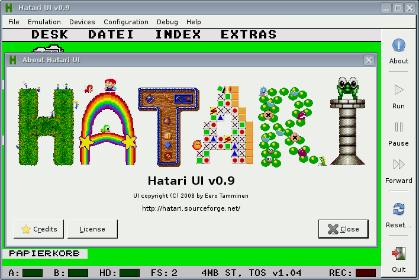
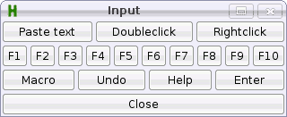
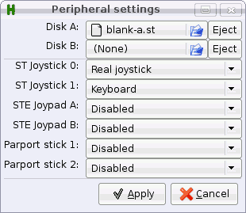
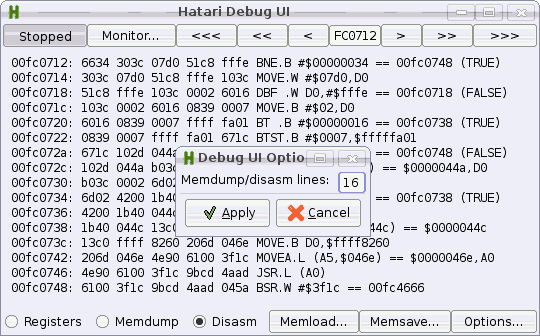
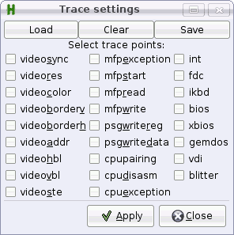

Version 1.4, August 2022
Written by: Eero Tamminen
See also: Hatari manual
Hatari on the WWW: https://www.hatari-emu.org/
Hatari UI is an out-of-process user interface for the Hatari emulator and its built-in debugger which can (optionally) embed the Hatari emulator window. Having the UI in another process allows doing it with a higher level language and avoiding adding GUI toolkit dependencies to Hatari itself.
The UI is done with PyGtk i.e. in Python language, using the Gtk widget set. it is an additional UI, the built-in Hatari SDL UI is not being replaced or going anywhere!
While the built-in SDL UI for Hatari has its good points, it has also many minor shortcomings:
As you can see from the screenshots, the features offered by the new UI are nice also on desktops, but the configurability is especially important for devices that have constrained input methods; limited set of keys and e.g. high DPI touchscreen. Something like this UI is really a must on devices with no right or middlebutton, where use of stylus or finger makes double clicks hard because the pixels are so small that hitting the same place twice is not easy and which lacks standard Atari keys.
One of the targets for the UI configurability and features was Nokia N8x0 (Linux) devices with 226 DPI 800x480 touchscreen and limited number of keys. This reflects slightly in the UI design too. For example text pasting is done in separate dialog instead of in an inline control and one can easily add buttons for synthetizing specific key presses.
See screenshots for more details.
There are several other features that would be nice in the new UI:
There are some issues which cannot be handled in an external UI (without additional support from Hatari):
Hatari is available from major Linux distributions and Hatari UI is included with it. The latest version can be found from the Hatari Git repository: https://framagit.org/hatari/hatari/-/tree/main/python-ui
Besides Linux, the UI could eventually be used even on Windows by first installing the PyGtk dependencies listed on (otherwise unrelated) Gramps application Windows dependencies page. Additionally the Hatari control socket code needs to be ported to Windows (i.e. use WinSock or have proper Cygwin build of Hatari with unix domain socket support).
Mac should not be a problem, under its UI glitz it is mostly BSD unix.
Current Hatari UI uses standard Gtk menu and toolbars instead of the button boxes used in older versions. You can still configure the buttons included to the top / bottom / left / right of the Hatari screen though.
Hatari UI with the About dialog open:
Options:
hatari-ui.py --embed --right "about,|,run,pause,forward,|,reset,|,quit"
While the older UI is bit different, these option examples and their screenshots show how to specify elements and their layout for the Hatari Python UI.
Hatari UI with the About dialog open:

Options:
hatari-ui.py --embed --top "about,run,pause,reset,screenshot,setup,quit" --panel "Input,..." --panel "Speed settings,..." --bottom "debug,trace,peripherals,Speed settings,Input"
An example UI configuration without the embedding option:

Options:
hatari-ui.py --top "about,run,pause,quit" --panel "Function keys,..." --panel "Other keys,..." --right "setup,debug,trace,Function keys,Other keys" --bottom "sound,spec512,|,fastforward,|,frameskip"
A panel with controls for configuring performance:

Options:
--panel "Speed settings,frameskip,>,fastforward,|,spec512,|,sound,>,close"
Another panel, with buttons for keys and mouse button events:
Peripherals settings dialog:
Machine settings dialog:

Debug UI:
Trace settings dialog:
Quitting with unsaved options:

Hatari UI v1.4 ============== Usage: hatariui.py [options] [directory|disk image|Atari program] Options: -h, --help this help -n, --nomenu omit menus -e, --embed embed Hatari window in middle of controls (X11 only) -f, --fullscreen start in fullscreen -l, --left <controls> toolbar at left -r, --right <controls> toolbar at right -t, --top <controls> toolbar at top -b, --bottom <controls> toolbar at bottom -p, --panel <name>,<controls> separate window with given name and controls Available (panel/toolbar) controls: | Separator between controls > Start next toolbar row in panel windows changes Latest Hatari changes pause Pause Hatari to save battery bugs Hatari bugs path Device & save file paths recanim Record animation sound Sound settings forward Whether to fast forward Hatari (needs fast machine) joystick Joystick settings uireadme Hatari UI README todo Hatari TODO trace Hatari tracing setup input Simulate text input and mouse clicks hatariui Hatari UI home page full Toggle whether Hatari is fullscreen harddisk Hard disk images and directories uirelease Hatari UI release notes authors Hatari authors shot Grab a screenshot lconfig Load configuration release Hatari release notes floppy Floppy images hatari Hatari home page recsound Record YM/Wav mails Hatari mailing lists debug Activate Hatari debugger reset Warm or cold reset Hatari display Display settings machine Hatari st/e/tt/falcon configuration sconfig Save configuration device Toggle Midi, Printer, RS232 peripherals load Load emulation snapshot save Save emulation snapshot about Hatari UI information quit Quit Hatari UI manual Hatari manual run (Re-)run Hatari compatibility Hatari compatibility list <panel name> Button for the specified panel window <name>=<string/code> Synthetize string or single key <code> You can have as many panels as you wish. For each panel you need to add a control with the name of the panel (see "MyPanel" below). For example: hatariui.py --embed \ --top "about,run,pause,quit" \ --panel "MyPanel,Macro=Test,Undo=97,Help=98,>,F1=59,F2=60,F3=61,F4=62,>,close" \ --right "MyPanel,debug,trace,machine" \ --bottom "sound,|,forward,|,full,|,quit" if no options are given, the UI uses basic controls.
To configure the keys, you need Atari keycode map matching your TOS language / version. Thorsten Otto has documented them here: http://tho-otto.de/keyboards/